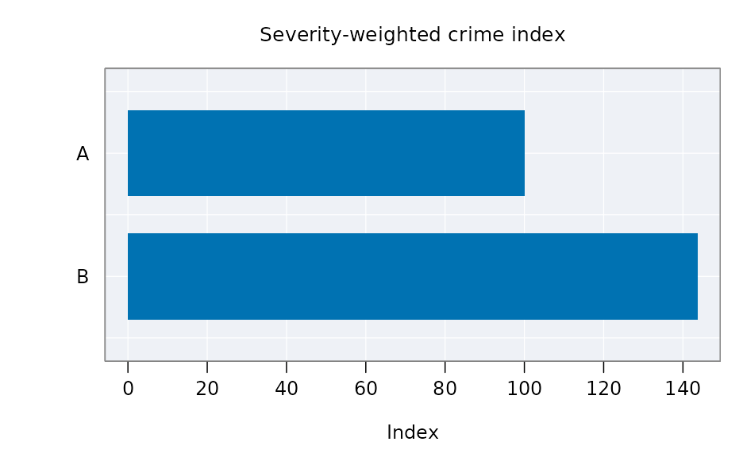
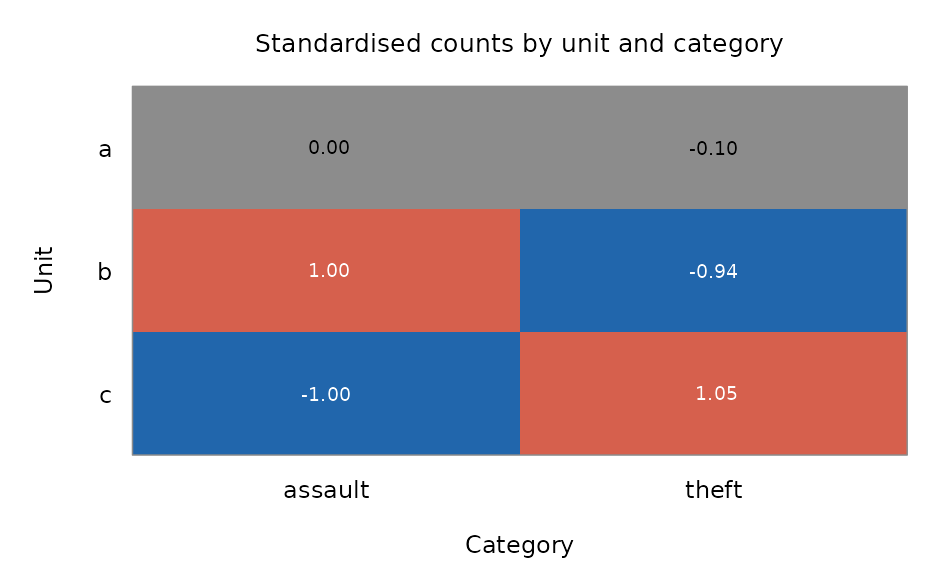
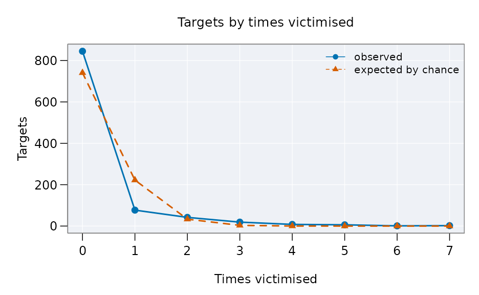

Policing, police-reported crime and deterrence
Source:vignettes/policing-and-deterrence.Rmd
policing-and-deterrence.RmdClearance rates, exposure bounds, crime severity and reporting, and how inspection or arrest risk deters.
Each section is one help page: what the function is for, the example
of its help page as it runs, and the plot of its result where the
package draws one. ?name gives the arguments and the value
in full.
Policing
Clearance-rate decomposition and Simpson’s paradox
clrsmp(): Splits the change in an aggregate clearance
rate between two periods, areas or services (A and B) into a rate
effect, from each offence type clearing more or less, and a mix effect,
from the workload moving between types that clear at different rates
(Kitagawa’s decomposition). The two always add up to the change. When
every type clears better in B and the aggregate still falls, the fall is
all mix: Simpson’s paradox, and the reason an aggregate clearance rate
cannot be read as performance without the split by type. See
proof("clrsmp").
# both types clear better in B, yet the aggregate falls
clrsmp(clra = c(minor = 90, serious = 20), reca = c(100, 50),
clrb = c(19, 60), recb = c(20, 140))
#> $parts
#> part ratea rateb sharea shareb rateeff mixeff
#> 1 minor 0.9 0.9500000 0.6666667 0.125 0.01979167 -0.1687066
#> 2 serious 0.4 0.4285714 0.3333333 0.875 0.01726190 -0.1079303
#>
#> $total
#> ratea rateb change rateeff mixeff up down
#> 0.73333333 0.49375000 -0.23958333 0.03705357 -0.27663690 2.00000000 0.00000000
#> simpson
#> 2.00000000Rates and disparities when exposure is measured by a proxy
expbnd(): Recorded counts (stops, searches, uses of
force) are rates per unit of exposure to police, and exposure is seldom
observed. If each group’s true exposure lies within a factor
gamma of an observed proxy (residents, drivers on the road,
calls for service), each group’s true rate lies within a factor
gamma of its proxy rate, and the ratio of two groups’ true
rates within a factor gamma^2 of the proxy ratio. The
direction of a disparity is settled only when the proxy ratio lies
outside that band. See proof("expbnd").
Risk difference when group membership is misrecorded
misrd(): When the group a person is recorded in (an
officer’s perception of race, say) differs at random from the true one,
with the same error rates whatever the outcome, the measured groups are
mixtures of the true ones. The measured risk difference is then the true
one times the factor (se + sp - 1) p (1 - p) / (d1 d0), where
d1 and d0 are the shares recorded in each
group. For any sensitivity and specificity it is never larger in size
than the true difference, so a disparity in recorded data understates
the true one; with se + sp >= 1 it never has the
opposite sign, while with se + sp < 1 a difference other
than 0 has it. See proof("misrd").
misrd(r1 = 0.3, r0 = 0.1, prev = 0.4, se = 0.8, sp = 0.9)
#> true measured factor d1 d0
#> 0.2000000 0.1426146 0.7130730 0.3800000 0.6200000Regression to the mean at selected hot spots
rtmhs(): Places chosen because their count in a first
period exceeds a cut show a fall in the next period even with no
treatment and no trend: if the two periods are exchangeable, the
selected places’ mean change is never positive, and places chosen for
being low never fall on average. This reports the change at the selected
places next to the same statistic on the data together with its
period-swapped copy, which is exchangeable by construction and so never
positive; the excess of the first over the second is the part of the
fall that selection alone does not explain. A treatment effect needs a
control group selected the same way. See
proof("rtmhs").
Police-reported crime
Severity-weighted crime index
crsev(): Police-reported crime weighted by seriousness,
as the Crime Severity Index of Statistics Canada is built (Wallace et
al. 2009): each offence’s count is multiplied by its weight (there, the
incarceration rate of the offence times its mean prison sentence in
days), the products are summed for each unit (a city, a neighbourhood)
and period, divided by the population and expressed against a base cell
as 100.
d <- data.frame(city = rep(c("A", "B"), each = 2),
off = rep(c("theft", "robbery"), 2),
n = c(10, 2, 8, 3), pop = 1000)
crsev(d$n, d$off, c(theft = 1, robbery = 50), unit = d$city,
pop = d$pop, base = 1)
#> crsev: severity-weighted counts and rates per 1e+05, index 100 at row 1
#> unit count sev pop rate srate idx
#> A 12 110 1000 1200 11000 100.0000
#> B 11 158 1000 1100 15800 143.6364
res <- crsev(d$n, d$off, c(theft = 1, robbery = 50), unit = d$city,
pop = d$pop, base = 1)
plot(res)
Composite index of standardised counts
zcomp(): Ranks units (neighbourhoods, divisions) on
several kinds of crime at once: each category’s counts are standardised
across the units (minus the mean, over the standard deviation) and the
standardised values are summed with weights. A category whose counts do
not vary contributes 0 to every unit. A unit with no row for a category
counts 0 there, and its standardised value is computed with that 0.
d <- data.frame(hood = rep(c("a", "b", "c"), 2),
kind = rep(c("assault", "theft"), each = 3),
n = c(5, 9, 1, 30, 22, 41))
zcomp(d$n, d$hood, d$kind)
#> zcomp: composite of 2 standardised categories
#> unit comp rank
#> a -0.10482848 3
#> b 0.05654365 1
#> c 0.04828484 2
Repeat victimisation: how often the same targets are victimised again
rptvic(): Asks how much crime falls on targets (people,
households, addresses, businesses) already victimised, and how soon a
repeat follows. From one record per incident with the target’s
identifier (and its date):
set.seed(8)
hh <- sample(1:400, 300, TRUE, prob = rgamma(400, 0.5))
day <- sort(sample(1:365, 300, TRUE))
rptvic(hh, t = day, pop = 1000, brk = c(0, 7, 30, 90, 365))
#> rptvic: 300 incidents, 155 victims, 145 repeats (48.3%)
#> k victims incidents expected
#> 0 845 0 7.408182e+02
#> 1 77 77 2.222455e+02
#> 2 42 84 3.333682e+01
#> 3 19 57 3.333682e+00
#> 4 8 32 2.500261e-01
#> 5 6 30 1.500157e-02
#> 6 1 6 7.500784e-04
#> 7 2 14 3.214622e-05
#> lo hi n share cum
#> 0 7 9 0.06206897 0.06206897
#> 7 30 26 0.17931034 0.24137931
#> 30 90 58 0.40000000 0.64137931
#> 90 365 52 0.35862069 1.00000000
Benford digit screens
bdig(), bnft(): bdig() takes
the first nd significant digits of each value. With
dp = -1 they are the digits of the shortest decimal that
gives back the double, decided exactly, so 0.29 gives 29 where
truncating x times a power of ten gives 28; with
dp from 0 to 22 the data are taken as recorded to
dp decimals. bnft() tests the digits against
Benford’s law, P(d) = log10(1 + 1 / d), by the chi-square
statistic with its exact upper tail, a Monte Carlo p-value from samples
of Benford digits of the same size, and Nigrini’s mean absolute
deviation. A departure from Benford’s law is a reason to look, not a
finding of fabrication: many honest data sets (bounded amounts, assigned
numbers) do not follow it.
Constant reporters of a reporting panel
rptc(): The units (agencies reporting to a national
crime statistics programme, say) that report at least
minrep months in every year from y0 to
y1. A year without a record of the unit, or with too few
months, disqualifies it, whatever other units do that year. Counts over
time are comparable only on such a constant panel; a trend from all
reporters mixes change in crime with change in who reports.
Deterrence
Offending chosen under certainty and severity of sanction
detrsp(): An offender picks the level of offending
x from a menu to maximise the benefit less the expected
sanction, ben - p * sanc, with the sanction increasing in
x. For any shape of the benefit (no concavity, no
smoothness) the chosen level never rises with the certainty
p, and never rises when the sanction schedule grows faster:
convexity buys a unique and smooth response, not its direction. Gives
the chosen level at each certainty; of tied optima (within
1e-12), the largest.
Which deterrence effects a design identifies
dtrid(): For the response y = b0 + b1 p + b2 s + b3 c to
the certainty p, severity s and celerity
(delay) c of the sanction regimes observed, a dimension
that never varies has no identified coefficient, and the coefficients
are identified exactly when the design (1, p, s, c) has full rank. Gives
the rank and, for each dimension, whether its effect is identified given
the others (full rank, or the rank falls without it). With
log = TRUE the design is (1, log p, log s, c): the expected
cost of an offence p s exp(-rho c) is linear on that scale, and with a
response y the ratio of the celerity to the certainty
coefficient, -b3 / b1, is the discount rate
rho the response implies.
# certainty varied at fixed severity and celerity
dtrid(p = c(0.1, 0.3, 0.5), s = c(2, 2, 2), c = c(30, 30, 30))
#> $rank
#> [1] 2
#>
#> $ident
#> certainty severity celerity
#> TRUE FALSE FALSE
#>
#> $const
#> certainty severity celerity
#> FALSE TRUE TRUE
#>
#> $coef
#> NULL
#>
#> $disc
#> NULL
#>
#> $cost
#> NULL
set.seed(2)
p <- runif(40, 0.1, 0.9)
s <- runif(40, 1, 10)
c <- runif(40, 0, 12)
y <- 2 - 0.8 * log(p) - 0.8 * log(s) + 0.08 * c + rnorm(40, sd = 0.1)
dtrid(p, s, c, y, log = TRUE)$disc
#> [1] 0.09283505The criminal, citizen and inspector game
inspg(): Replicator dynamics of a rock-paper-scissors
game of three strategies (criminals, citizens, inspectors), each beating
the next with stake a: x_i’ = a x_i (x_{i+1} - x_{i+2}).
The centroid is the only interior rest point and x1 x2 x3 is conserved,
so the shares circle the centroid for ever and more inspection does not
steadily lower crime (D’Orsogna and Perc 2015). Integrated by
fourth-order Runge-Kutta; the drift of the invariant measures the
integration error.
Phase diagram of the inspection game
insphs(): The inspection game of Helbing et al. (2010)
with cooperators (C), criminals (P) and inspectors (O), against C, P, O:
C earns (1, 0, 1), P earns (T, 0, T - 1) for the temptation
T, O earns 1 - g whatever it meets for the
inspection cost g. Discrete replicator steps x += rate * x
* (f - mean f) (negative shares set to 0, the shares normalised) run
from x0 at each point of a grid of temptations and costs;
the final shares map the phases of the game, the criminals’ share
standing for the crime rate.
ph <- insphs(seq(0.1, 1.8, by = 0.3), seq(0.1, 1.1, by = 0.25),
steps = 200)
round(ph$crime, 2)
#> 0.1 0.35 0.6 0.85 1.1
#> 0.1 0.00 0.00 0.00 0.00 0.00
#> 0.4 0.00 0.00 0.00 0.00 0.00
#> 0.7 0.00 0.01 0.02 0.03 0.04
#> 1 0.00 0.06 0.19 0.29 0.35
#> 1.3 0.03 0.25 0.52 0.64 0.69
#> 1.6 0.11 0.40 0.67 0.79 0.82Collider bias of arrest data
colarr(): Two causes of arrest with prevalences
a and e, independent in the population, and a
background cause of prevalence bg; a person is arrested
when any is present. Among arrestees the two causes are no longer
independent: their odds ratio is exactly bg, below 1, and
the negative association grows as arrests for other reasons become rare.
Studying arrestees alone manufactures it (Hernan and Robins, Fine Point
8.2).
colarr(a = 0.3, e = 0.2, bg = c(0.5, 0.1, 0.01))
#> a e bg or lor c11 c10 c01 c00
#> 1 0.3 0.2 0.50 0.50 -0.6931472 0.08333333 0.3333333 0.1944444 0.38888889
#> 2 0.3 0.2 0.10 0.10 -2.3025851 0.12096774 0.4838710 0.2822581 0.11290323
#> 3 0.3 0.2 0.01 0.01 -4.6051702 0.13464991 0.5385996 0.3141831 0.01256732